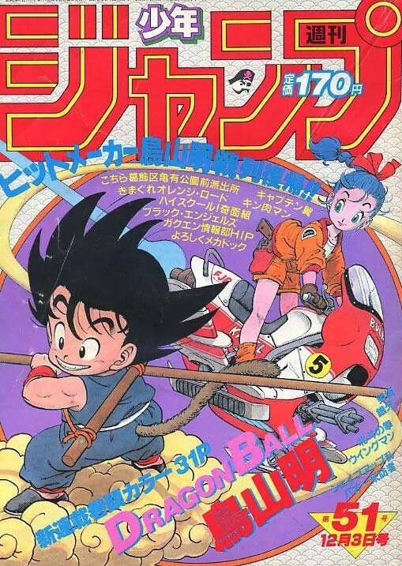

Dragon Ball
 A fines de 1984 se publica por primera vez en Japón el manga "Dragon Ball", el cual es escrito y dibujado por Akira Toriyama. Su trama describe las aventuras de "Gokú", un guerrero saiyajin, cuyo objetivo en la vida es proteger a la Tierra de otros seres que quieren conquistarla y exterminar a la humanidad.
Dos años después de su lanzamiento, en 1986, Toei Animation estrenó una adaptación animé que abarcó aproximadamente la primera mitad de la obra, la cual concluyó en 1989 y se transmitió por el canal Fuji Television, de Japón.